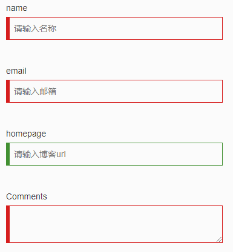
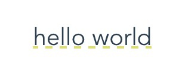

之前不久，由于自己平时涉猎还算广泛，总结了一篇博客：这些JavaScript编程黑科技，装逼指南，高逼格代码，让你惊叹不已，没想到受到了大家的欢迎，有人希望能博主还能整理个 CSS 的一些黑魔法小技巧，无奈我 CSS 一直很渣，没什么干货，最近写了一个 Chrome 插件 GayHub，算是把 GitHub 的样式审查了个变，在写的过程中，也收获了很多关于 CSS 的小技巧，尤其是开始的第一个技巧，学习到了很多，于是再加上一波搜集，就诞生这篇博文，欢迎补充~~~?。
1、利用 CSS 的 content 属性 attr 抓取资料
需求
鼠标悬浮实现一个提示的文字，类似github的这种，如图：

想必大家都想到了伪元素 after，但是文字怎么获得呢，又不能用 JavaScript。
CSS 的伪元素是个很強大的东西，我们可以利用他做很多运用，通常为了做一些效果，content:" " 多半会留空，但其实可以在里面写上 attr 抓资料哦！
<div data-msg="Open this file in Github Desktop">
hover
</div>div {
width: 100px;
border: 1px solid red;
position: relative;
}
div:hover:after {
content: attr(data-msg);
position: absolute;
font-size: 12px;
width: 200%;
line-height: 30px;
text-align: center;
left: 0;
top: 25px;
border: 1px solid green;
}在 attr 里面塞入我们在 html 新增的 data-msg 属性，这样伪元素 (:after) 就会得到该值。
最终效果

同样的，你还可以结合其他强大的选择器使用，例如：使用属性选择器选择空链接
显示没有文本值但是 href 属性具有链接的 a 元素的链接：
a[href^="http"]:empty::before {
content: attr(href);
}这样做很方便。
2、利用用 :valid 和 :invalid 来做表单即时校验
需求
让表单检验变得简单优雅，不需要写冗长的 JS 代码来校验设置样式
html5 丰富了表单元素，提供了类似 required,email,tel 等表单元素属性。同样的，我们可以利用 :valid 和 :invalid 来做针对html5表单属性的校验。
-
:required伪类指定具有required 属性的表单元素 -
:valid伪类指定一个通过匹配正确的所要求的表单元素 -
:invalid伪类指定一个不匹配指定要求的表单元素
代码
<div class="container">
<div class="row" style="margin-top: 2rem;">
<form>
<div class="form-group">
<label>name</label>
<input type="text" required placeholder="请输入名称">
</div>
<div class="form-group">
<label>email</label>
<input type="email" required placeholder="请输入邮箱">
</div>
<div class="form-group">
<label>homepage</label>
<input type="url" placeholder="请输入博客url">
</div>
<div class="form-group">
<label>Comments</label>
<textarea required></textarea>
</div>
</form>
</div>
</div>.valid {
border-color: #429032;
box-shadow: inset 5px 0 0 #429032;
}
.invalid {
border-color: #D61D1D;
box-shadow: inset 5px 0 0 #D61D1D;
}
.form-group {
width: 32rem;
padding: 1rem;
border: 1px solid transparent;
&:hover {
border-color: #eee;
transition: border .2s;
}
label {
display: block;
font-weight: normal;
}
input,
textarea {
display: block;
width: 100%;
line-height: 2rem;
padding: .5rem .5rem .5rem 1rem;
border: 1px solid #ccc;
outline: none;
&:valid {
@extend .valid;
}
&:invalid {
@extend .invalid;
}
}
}更多伪元素技巧可以参看这篇文章：你不知道的CSS
最终效果

3、利用 nth-of-type 选择某范围内的子元素
需求
table表格红绿相间，显示的更加直观
代码
<table>
<tbody>
<tr>
<td>1</td>
</tr>
<tr>
<td>2</td>
</tr>
<tr>
<td>3</td>
</tr>
<tr>
<td>4</td>
</tr>
<tr>
<td>5</td>
</tr>
<tr>
<td>6</td>
</tr>
</tbody>
</table>tbody tr:nth-of-type(2n){
background-color: red;
}
tbody tr:nth-of-type(2n+1){
background-color: green;
}最终效果

你也这样来做，选择5-10的子元素。
table tr:nth-child(n+5):nth-child(-n+10) {
background-color: red;
}4、让文字像古诗一样竖着呈现
需求
有时候，需要容器的文字从上到下排列，而不是从左往右排列，如图所示：

这是segmentfault的回到顶部，他的实现很简单，就是设置一定宽度让其折行，如果我要实现这种需求呢？

代码
writing-mode 这个 CSS 属性，我们是不是很少见到，很少用到！我们往往称不常见的东西为“生僻”，就像是不常见的文字我们叫“生僻字”，因此不常见的 CSS 属性，我们可以叫做“生僻属性”，writing-mode 给我们的感觉就是一个“生僻属性”，很弱，可有可无。这个属性可以追溯到 IE 5.5 时代，兼容性是相当好的。
<h4>咏柳</h4>
<p>碧玉妆成一树高，<br>万条垂下绿丝绦。<br>不知细叶谁裁出，<br>二月春风似剪刀。</p>
<div class="verticle-mode">
<h4>咏柳</h4>
<p>碧玉妆成一树高，<br>万条垂下绿丝绦。<br>不知细叶谁裁出，<br>二月春风似剪刀。</p>.verticle-mode {
writing-mode: tb-rl;
-webkit-writing-mode: vertical-rl;
writing-mode: vertical-rl;
}
/* IE7比较弱，需要做点额外的动作 */
.verticle-mode {
*width: 120px;
}
.verticle-mode h4,
.verticle-mode p {
*display: inline;
*writing-mode: tb-rl;
}
.verticle-mode h4 {
*float:right;
}最终效果

更多细节与讨论请移步张鑫旭老师的这篇文章：改变CSS世界纵横规则的writing-mode属性
5、实现鼠标悬浮内容自动撑开的过渡动画
需求
需要为一个列表添加个动画，容器的高度是不确定的，也就是高度为
auto，悬浮时候撑开内容有个过渡动画
如下图所示：

而用 CSS3 实现的话，由于高度的不确定，而 transtion 是需要具体的树枝，所以设置 height:auto 是无法实现效果的，可以通过 max-height 这个属性间接的实现这么个效果，css 样式是这样的：
代码
<ul>
<li>
<div class="hd"> 列表1 </div>
<div class="bd">列表内容<br>内容列表内容<br>内容列表内容<br>内容</div>
</li>
<li>
<div class="hd"> 列表1 </div>
<div class="bd">列表内容<br>内容列表内容<br>内容列表内容<br>内容</div>
</li>
<li>
<div class="hd"> 列表1 </div>
<div class="bd">列表内容<br>内容列表内容<br>内容列表内容<br>内容</div>
</li>
</ul>.bd {
max-height:0;
overflow:hidden;
transition: all 1s ease-out;
}
li:hover .bd {
max-height: 600px;
transition-timing-function: ease-in;
}最终效果
跟前面 GIF 差不多，这里就不录 GIF 了，有兴趣的可以自己尝试感受一下

6、利用 pointer-events 禁用 a 标签事件效果
需求：
在做
tab切换的时候，当选中当前项，禁用当前标签的事件，只有切换其他tab的时候，才重新请求新的数据。
pointer-events 是一个用于 HTML 指针事件的属性。
pointer-events 可以禁用 HTML 元素的 hover/focus/active 等动态效果。
默认值为 auto，语法：pointer-events: auto | none | visiblepainted | visiblefill | visiblestroke | visible | painted | fill | stroke | all;
代码
<ul>
<li>
<a class="tab" href="https://google.com">aaa</a>
</li>
<li>
<a class="tab active" href="https://facebook.com">bbb</a>
</li>
<li>
<a class="tab" href="https://stackoverflow.com">ccc</a>
</li>
</ul> .active{
pointer-events: none;
}最终效果

好像没什么效果?
7、CSS 如何实现文字两端对齐
需求
红框所在的文字有四个字的、三个字的、两个字的，如果不两端对齐可以选择居中对齐，或者右对齐。但是如果要想文字两端对齐呢？
代码
<div>姓名</div>
<div>手机号码</div>
<div>验证码</div>
<div>账号</div>
<div>密码</div>div{
margin:10px 0;
width:100px;
border:1px solid red;
text-align-last: justify;
}最终效果

8、使用 :not() 去除导航上不需要的属性
需求
有时候导航栏需要之间需要用逗号,进行隔离，但是最后一个不需要
代码
<ul class="nav">
<li>a</li>
<li>b</li>
<li>c</li>
<li>d</li>
<li>e</li>
</ul>li{
list-style:none;
margin-bottom:10px;
display:inline-block;
}
ul > li:not(:last-child)::after {
content: ",";
}当然，你可以使用 .nav li + li(不包括第一个li) 或者 .nav li:first-child ~ li(不包括最后一个li)， 但是使用 :not() 的意图特别清晰，CSS选择器按照人类描述它的方式定义边框。
最后效果

或者，你已经学习了一些关于 使用 :not()，你还可以尝试：
/* 选择1到3的元素并显示 */
li:not(:nth-child(-n+3)){
display: none;
}9、移动web页面支持弹性滚动
需求
在IOS机型中，非body元素的滚动条会非常不流畅，又不想用JS模拟滚动条。
传统 pc 端中，子容器高度超出父容器高度，通常使用 overflow:auto 可出现滚动条拖动显示溢出的内容，而移动web开发中，由于浏览器厂商的系统不同、版本不同，导致有部分机型尤其是 IOS 机型不支持弹性滚动，从而在开发中制造了所谓的 BUG。
代码
body{
-webkit-overflow-scrolling: touch; /* ios5+ */
}
ele{
overflow:auto;
}-webkit-overflow-scrolling属性具有继承效果，所以在 body 上设置即可，这样局部滚动条就非常的流畅了。
最终效果
所有滚动条都相当的流畅了
10、美化浏览器自带的 radio ，checkbox 属性
需求
设计师：你那个单选框按钮好丑啊，跟我的设计稿差好远。程序员：我有什么办法，浏览器就是这样的。。。
记得刚开始写页面时候，被浏览器各种默认的 UI 样式恶心到了，当初确实也没啥办法，反正也不影响功能，就那样吧。
先讲一下原理：checkbox hack技术
我们使用
CSS一些特殊的选择器，然后配合单选框以及复选框自带的一些特性，可以实现元素的显示隐藏效果。然后通过一些简单的扩展，我们可以不使用任何JavaScript代码实现类似：自定义的单复选框，“更多”展开与收起效果，选项卡切换效果，或是多级下拉列表效果等等。相信很多前端开发人员都会遇到
boss让修改checkbox和radio样式，毕竟自带的样式太丑了。后来我们发现修改自带样式并不是那么容易，最后直接使出杀手锏——点击之后替换图片。
今天教大家一种方法，不用替换图片，随意修改样式。
先讲一下原理：两个关键东东，一是伪类选择器
:checked，表示对应控件元素（单选框或是复选框）选中时的样式；二就是加号+相邻兄弟选择器，这个符号表示选择后面的兄弟节点。于是，两者配合，就可以轻松自如控制后面元素的显示或者隐藏，或是其他样式了。而如何让单复选框选中和不选中了，那就是
label标签了哈，for属性锚定对应的单选框或是复选框，然后点击这里的label标签元素的时候，对应的单复选框就会选中或是取消选中。然后，就有上面的效果啦！
代码
这里只给一个 radio 单选框的代码,仅供参考:
<div class="radio-beauty-container">
<label>
<span class="radio-name">前端工程师</span>
<input type="radio" name="radioName" id="radioName1" hidden/>
<label for="radioName1" class="radio-beauty"></label>
</label>
<label>
<span class="radio-name">后端工程师</span>
<input type="radio" name="radioName" id="radioName2" hidden/>
<label for="radioName2" class="radio-beauty"></label>
</label>
<label>
<span class="radio-name">全栈工程师</span>
<input type="radio" name="radioName" id="radioName3" hidden/>
<label for="radioName3" class="radio-beauty"></label>
</label>
</div>.radio-beauty-container {
font-size: 0;
$bgc: green;
%common {
padding: 2px;
background-color: $bgc;
background-clip: content-box;
}
.radio-name {
vertical-align: middle;
font-size: 16px;
}
.radio-beauty {
width: 18px;
height: 18px;
box-sizing: border-box;
display: inline-block;
border: 1px solid $bgc;
vertical-align: middle;
margin: 0 15px 0 3px;
border-radius: 50%;
&:hover {
box-shadow: 0 0 7px $bgc;
@extend %common;
}
}
input[type="radio"]:checked+.radio-beauty {
@extend %common;
}
}最终效果

美化radio单选框在线预览地址：点击我呀
美化checkbox复选框在线预览地址：点击我呀
更多关于这方面的介绍和例子可以参看张鑫旭大神的这篇文章：CSS radio/checkbox单复选框元素显隐技术
11、改变 input 焦点光标的颜色
需求
设计师觉得默认的光标颜色有点与整体设计风格不符合，有点突兀，想换成红色的
代码
<input value="This field uses a default caret." />
<input class="custom" value="I have a custom caret color!" />input {
caret-color: auto;
display: block;
margin-bottom: .5em;
}
input.custom {
caret-color: red;
}最终效果

12、rem 布局不再使用 JavaScript 设置
这里不探讨 rem 的原理以及细节，还不熟悉的童鞋建议去恶补一下。
需求
有时候，移动端用
rem布局时候，根据不同的屏幕宽度要设置不同的font-size来做到适配，要写一坨JS来设置，能不能不用JS呢？
例如：以 750px 设计稿作为基准，根节点设置 font-size 为 100px ,只考虑 DPR 为 2 的情况，只考虑最简单的情况
document.querySelector('html').style.fontSize = `${window.innerWidth / 7.5 }px`;代码
现在移动端 css3 单位 vw ,wh 兼容性已经很不错了，在不需要兼容太低版本的安卓机情况下可以这样来：
html{
font-size: 100vw / 750
}最终结果
就这么简单的设置，rem 就可以使用了
13、利用 transparent 属性实现各种三角形，提示框
需求
在不使用图片的情况，实现一个简单的三角形箭头
代码
#triangle-right {
width: 0;
height: 0;
border-top: 50px solid transparent;
border-left: 100px solid red;
border-bottom: 50px solid transparent;
}最终效果

复杂点的话，同样的原理还可以实现一个五角星，原理都是利用 transparent 的透明属性。
14、让网站所有图片变成黑白色彩的
需求
记得2008年时候汶川大地震时候，很多网站图片都变成黑白色彩悼念逝者
代码
<img src="https://user-gold-cdn.xitu.io/2017/9/25/0844cf44a8d8c4ed026d6c488a6e9b80?
imageView2/1/w/500/h/200/q/85/interlace/1" alt="" class="desaturate">img.desaturate {
filter: grayscale(100%);
-webkit-filter: grayscale(100%);
-moz-filter: grayscale(100%);
-ms-filter: grayscale(100%);
-o-filter: grayscale(100%);
}最终效果

15、实现文字的波浪线效果
需求
实现文字波浪线的强调效果，如图所示

相信大家对于 text-decoration 这个属性并不陌生，在重置 a 标签的默认样式时，我们经常要这样写：text-decoration: none; 可能对它了解的人也很少，实际上 text-decoration 是一个复合属性，由 line、style 和 color 组成。
所以我们可以实现这样的效果：

可惜的是 line 只有 underline (下划线)、overline (上划线)和 line-through (删除线)。如果突然需要下划波浪线，怎么办呢？不要急，神奇的 CSS 会帮你做到的。首先，你需要先了解一下渐变的使用技巧。
说一下这里的思路，我们首先要用两段渐变构造一个基本元素：'X'(这里我就不放图了)，下一步就比较重要了，我们要截取'X'的上半部分，得到一个'V',从而结合 repeat 形成波浪线。下面是用 scss 写的一个 mixin ，方便以后使用。
代码
@mixin waveline($color,$h) {
position: relative;
&::after {
content: '';
display: block;
position: absolute;
top: 100%;
left: 0;
width: 100%;
height: $h;
background: linear-gradient(135deg, transparent, transparent 45%, $color, transparent 55%, transparent 100%),
linear-gradient(45deg, transparent, transparent 45%, $color, transparent 55%, transparent 100%);
background-size: $h * 2 $h * 2;
}
}最终效果

兼容性
这些技巧在当前版本的Chrome，Firefox， Safari， 以及Edge， 和IE11可以工作，移动端基本都没问题，IE 重度开发者慎用。
相关兼容性自行查找：https://caniuse.com/
推荐一波
有趣的 GitHub 仓库
国服第一切图仔的 CSS 仓库：你想知道的 CSS 奇技淫巧，在这里，都有。iCSS -- interesting css
张鑫旭老师的博客

受益颇多，所以推荐一波。?
rem的那个应该用calc包裹一下吧，不然会报错。数据不能直接计算，要用CSS函数 calc()来帮助实现。
赞 +1